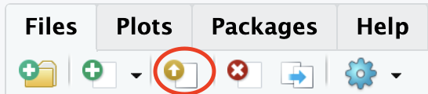

Lab 1: Hello R!
The goal of this lab is to acquaint you with R and RStudio1.
Getting started
Go to the Files section of our Canvas page and download
lab-1.qmd. This is a blank template that you will fill in to complete this assignment;Use these steps to navigate to
RStudiousing the Duke Container Manager;Let’s keep things organized. Under the Files tab on the lower right of
RStudio, create a new folder calledlab-1. You’ll keep everything related to this lab in that folder;-
Upload the file
lab-1.qmdto yourRStudiofiles using the pictured button, and move it into thelab-1folder;
Now proceed to complete the exercises in this lab.
Toolkit review
Quarto
lab-1.qmd is an example of a Quarto Markdown file. Quarto allows you to seamlessly combine written text and code to produce clean and professional looking reports. You will use this system to create all of your assignment submissions in this course. When you open your .qmd file, you see a block of text at the top in between dashed lines. This is called the YAML2, and it contains the settings for your document, like the title, author name, date, and what sort of document you want to create. In our case, it will always be a PDF.
Change the author name to your name and update the date with today’s date. Click the Render button to render the document. What do you notice?
To avoid issues that can occur while rendering, it is a good idea to render early and often. At least after every exercise.
Packages
In this lab we will work with three packages: the tidyverse package which is a collection of packages for doing data analysis in a “tidy” way, the datasauRus package which contains the data set for the first part of your lab.
Code style
For all assignments in this course there is a “code style and formatting” component to the grade. To receive full points for this component, you must:
There is a line break after each
|>in a pipeline or+in a ggplot.There are spaces around
=signs.There is a space after each
,.Code is properly indented.
Code doesn’t exceed 80 characters in each line, longer lines of code are spread across multiple lines with appropriately placed line breaks. (In the rendered document, your code shouldn’t run off the page)
Code chunks are labeled, informatively and without spaces.
These guidelines follow the tidyverse style guide. This style guide is commonly used and will help make your code more legible.
Part 1: datasauRus
The data frame we will be working with for the first part of the lab is called datasaurus_dozen and it’s in the datasauRus package. Actually, this single data frame contains 13 data sets (a “baker’s dozen”), designed to show us why data visualization is important and how summary statistics alone can be misleading. The different data sets are marked by the data set variable.
To find out more about the data set, type the following in your console (this will bring up the help file).
?datasaurus_dozenExercise 1
Based on the help file, how many rows and how many columns does the datasaurus_dozen file have? What are the variables included in the data frame? Add your responses to your lab report under “Exercise 1”.
Let’s take a look at the names of the data sets inside of datasaurus_dozen. To do this, we can make a frequency table of the “data set” variable. Run the code chunk below. Note: when you run the code chunk below, a table “prints” to the screen. In general, we say “print to screen” to mean that the output of your code should show up on your screen (when asked to ‘print to screen’ in an assignment, you should make sure the output displays in your rendered document).
datasaurus_dozen |>
count(dataset)# A tibble: 13 × 2
dataset n
<chr> <int>
1 away 142
2 bullseye 142
3 circle 142
4 dino 142
5 dots 142
6 h_lines 142
7 high_lines 142
8 slant_down 142
9 slant_up 142
10 star 142
11 v_lines 142
12 wide_lines 142
13 x_shape 142The original Datasaurus (dino) data was created by Alberto Cairo. The other Dozen were generated using simulated annealing and the process is described in the paper Same Stats, Different Graphs: Generating data sets with Varied Appearance and Identical Statistics through Simulated Annealing by Justin Matejka and George Fitzmaurice. In the paper, the authors simulate a variety of data sets that have the same summary statistics as the original Datasaurus but have very different data.
You can view the whole data frame by running the code view(datasaurus_dozen) in the console. This will open the data frame in a new tab. Try it out!
Exercise 2
Plot y vs. x for the dino data set. Then, calculate the correlation coefficient between x and y for this data set. Make sure that this value is printed in your document.
Below is the code you will need to complete this exercise. Basically, the answer is already given, but you need to include relevant bits in your .qmd document and successfully render it and view the results.
Start with the datasaurus_dozen and pipe it into the filter function to filter for observations where dataset == "dino". Store the resulting filtered data frame as a new data frame called dino_data.
dino_data <- datasaurus_dozen |>
filter(dataset == "dino")There is a lot going on here, so let’s slow down and unpack it a bit.
First, the pipe operator: |>, takes what comes before it and sends it as the first argument to what comes after it. So here, we’re saying filter the datasaurus_dozen data frame for observations where dataset == "dino".
Second, the assignment operator: <-, assigns the name dino_data to the filtered data frame.
Note in R you may use either <- or = for an assignment operator. We’ll use <- in this class as it’s the more commonly used assignment operator, but when you look for R help online, you might see = being used as well.
Next, we need to visualize these data. We will use the ggplot function for this. Its first argument is the data you’re visualizing. Next we define the aesthetic mappings. In other words, the columns of the data that get mapped to certain aesthetic features of the plot, e.g. the x axis will represent the variable called x and the y axis will represent the variable called y. Then, we add another layer to this plot where we define which geometric shapes we want to use to represent each observation in the data. In this case we want these to be points, hence geom_point.
ggplot(dino_data, aes(x = x, y = y)) +
geom_point()
For the second part of this exercise, we need to calculate a summary statistic: the correlation coefficient. The correlation coefficient (r) measures the strength and direction of the linear association between two variables. You will see that some of the pairs of variables we plot do not have a linear relationship between them. This is exactly why we want to visualize first: visualize to assess the form of the relationship, and calculate r only if relevant.
In this case, calculating a correlation coefficient really doesn’t make sense since the relationship between x and y is definitely not linear, but is instead more ‘dinosaur-esque’.
For illustrative purposes only, let’s calculate the correlation coefficient between x and y.
Exercise 3
Plot y vs. x for the star dataset. You can (and should) reuse code we introduced above, just replace the dataset name with the desired dataset. Then, calculate the correlation coefficient between x and y for this dataset. How does this value compare to the r of dino?
To begin, edit the name of the code chunks from ex-3-1 and ex-3-2 to something more meaningful, e.g: plot-star and r-star respectively.
Exercise 4
Finally, let’s plot all datasets at once. In order to do this we will make use of faceting, given by the code below:
ggplot(datasaurus_dozen, aes(x = x, y = y, color = dataset)) +
geom_point() +
facet_wrap(~ dataset, ncol = 3)And we can use the group_by function to generate all the summary correlation coefficients. We’ll see these functions again and again.
Exercise 5
Exercise 6
In the above code chunk, identify each of the following as an argument or a function:
summarizedino_datameanxymu_x = mean(x)
Exercise 7
Combine the code from exercises 4 and 5 to compute the mean(x) and mean(y) for each data set. Print your result to the screen. What do you notice? What does this say about the importance of visualizing your data as opposed to only looking at summary statistics?
Part 2: IMS Exercises
The exercises in this section do not require code. Make sure to answer the questions in full sentences.
Exercise 8
IMS - Chapter 1 exercises, #4: Cheaters, study components.
Exercise 9
IMS - Chapter 1 exercises, #14: UN Votes.
Exercise 10
IMS - Chapter 1 exercises, #16: Shows on Netflix.
Lastly…
Recommend some music for us to listen to while we grade this.
Wrap up
Submitting
Before you proceed, first, make sure that you have updated the document YAML with your name! Then, render your document one last time, for good measure.
To submit your assignment to Gradescope:
Go to your Files pane and check the box next to the PDF output of your document (
lab-1.pdf).Then, in the Files pane, go to More > Export. This will download the PDF file to your computer. Save it somewhere you can easily locate, e.g., your Downloads folder or your Desktop.
Go to the course Canvas page and click on Gradescope and then click on the assignment. You’ll be prompted to submit it.
Mark the pages associated with each exercise. All of the papers of your lab should be associated with at least one question (i.e., should be “checked”).
If you fail to mark the pages associated with an exercise, that exercise won’t be graded. This means, if you fail to mark the pages for all exercises, you will receive a 0 on the assignment. The TAs can’t mark your pages for you, and for them to be able to grade, you must mark them.
Grading
| Exercise | Points |
|---|---|
| Exercise 1 | 5 |
| Exercise 2 | 4 |
| Exercise 3 | 6 |
| Exercise 4 | 5 |
| Exercise 5 | 2 |
| Exercise 6 | 6 |
| Exercise 7 | 7 |
| Exercise 8 | 5 |
| Exercise 9 | 5 |
| Exercise 10 | 5 |
| Total | 50 |
Acknowledgements
This assignment was adapted from a lab in Data Science in a Box.
Footnotes
Ris a programming language, just likePython,Java,C++, and other things you may have heard of.RStudiois a platform for writingRcode in an easy and organized way. It is an example of an integrated development environment (IDE).↩︎That stands for “Yet Another Markup Language.” Now please promptly forget that.↩︎